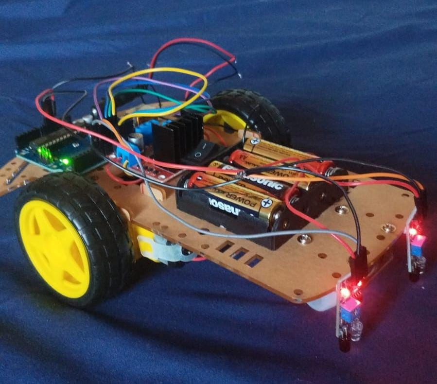

Resumo Profissional
Tecnico em Manutenção T.I.
Mega Midia Group
Dez/2023 - Out/2025
Manutenção e configuração de CPUs, placas de microprocessamento (Raspberry e Orange) e aparelhos android TV Box.
Cooperação direta com a equipe de suporte técnico e logística, organizando e auxiliando no envio de equipamentos.
Professor de Informática
Jumper Cursos
Jan/2023 - Dez/2023
Atuei como professor de manutenção e montagem de computadores desktop, apresentando conteúdo teórico e prático.
Também como professor de informática básica, apresentando Pacote Office e boas práticas no sistema operacional Windows, com dicas para melhor desempenho e utilidades gerais.
Estágio em Desenvolvimento Web
UTFPR
Jun/2022 - Dez/2022
Identificação e análise de problemas em aplicações web obtendo as melhores soluções utilizando Angular, mapeamento do design do sistema e auxílio na implementação de features utilizando Svelte.
Colaboração com diversos departamentos da instituição no planejamento e na implementação de novos planos de melhoria e mudanças em aplicações web.
Criação de documentos e planilhas utilizando Microsoft Word e Excel para auxiliar na produção de comunicações e relatórios técnicos gerenciais.
Projetos Relevantes
Carrinho Seguidor de Linha
Artigo - Nov/2024Robô autônomo capaz de seguir uma linha preta no chão sem intervenção humana, desenvolvido em equipe como projeto de robótica na faculdade.

Os dois sensores IR ficam posicionados na frente do carrinho, um em cada lado da linha. O Arduino lê continuamente os sinais dos sensores:
Site Dualine Nail
Link - Mar/2026Site completo para nail designer com portfólio de trabalhos, tabela de serviços e preços, página "sobre" e sistema de agendamento integrado ao Google Agenda em tempo real.
O agendamento lê o calendário da cliente e bloqueia automaticamente os horários ocupados no site, respeitando a duração real de cada evento. Dias sem atendimento (como domingos) são bloqueados por padrão. Ao confirmar, o cliente é redirecionado ao WhatsApp com a mensagem de solicitação já preenchida.
Tecnologias: